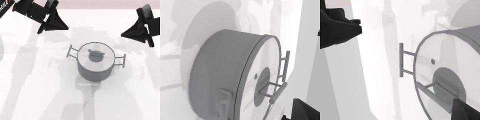
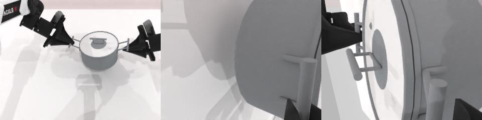

xiaolanliu · 2026年11月4日
从失败动作出发，
直接修改模型权重
我们让模型分析机器人的失败轨迹，寻找不经过梯度训练的修正方法。它没有停留在视觉语言骨干的内部，而是根据动作和激活的变化，自行把修改位置转向了更靠近机器人输出的动作头。
下面先给出最终修改，再解释模型为什么这样选，以及这两组实验实际改善了什么。分析和修改发生在离线实验阶段；测试时，机器人使用的是已经固定的权重。
π0.5 · LIBERO Spatial
一个夹爪输出偏置
action_out_proj.bias[6]
−0.01904296875 → −0.26953125只修改一个参数，偏移量为−0.25。它影响流匹配去噪中的夹爪速度预测，再通过采样过程改变动作；这不等同于给夹爪增加力度。
Qwen · RoboTwin
动作头的两行夹爪权重
W = action_model.model.fc2.weight
W[12:14, :] += γ · v[None, :]
γ = 0.415917041840632两行分别对应左右夹爪。v由失败与正常状态的特征构造；输入特征决定修改的响应，关节输出权重和偏置保持原值。
这两次编辑都直接写入固定权重，没有优化器、反向传播，也没有在推理时加一条“到第几步就开爪”的规则。不过，它们仍然需要校准轨迹和模型分析，不是完全不使用数据。
01 · 为什么转向动作头
修改位置，是模型分析之后选出来的
我们给模型的目标是分析失败、提出权重修改，并通过仿真检验，而没有预先指定必须修改动作头。这次工作受 Weight-Space Programming 启发，起初也探索过VLM骨干内部的投影方向。
在Qwen提锅实验中，模型检查失败状态与正常状态的激活，尝试修改Transformer内部投影。较弱修改没有救回提锅，较强修改只救回2/50场，同时影响了正常的click任务。内部方向确实能改变动作，但没有形成足够明确的目标收益。
随后，模型沿着失败轨迹继续看：双爪在还没接近锅把手时就已闭合。这个问题直接落在动作输出的时机上。于是，它自行将干预位置转到动作头的夹爪输出行，尝试保留正常抓握，只改变那些过早闭合的状态。
动作头的好处是能更直接地核对修改的影响：在相同输入下，哪些输出变了、哪些保持原值，都可以逐项检查。但更靠近输出也不意味着没有副作用。后面的全量测试正好说明了这一点。
02 · π0.5 / LIBERO Spatial
改一个偏置后，成功率提高了多少？
这组实验使用 Miical/pi05-libero-spatial-sft-step-100。它在Spatial上做过100步微调，不是官方高分LIBERO权重。我们比较的是同一个模型应用单参数修改前后的表现。
修改的出发点是抓取中的开合时机：如果模型过早松开，能否通过夹爪通道的偏置，让抓持更容易持续？这里的输出是流匹配速度，不能把−0.25直接理解成最终动作增加或减少同样的数值。实际影响需要放回完整采样和仿真中观察。
在校准的100回合中，原模型成功71次，修改后75次。独立测试换用初态10–49，每个任务40回合，共400对；两版模型使用相同初态和随机种子。
Spatial · 10任务，每模型400回合
69.0% → 73.5%
276/400 → 294/400
48场从失败变为成功，
也有30场从成功变为失败。
总体点估计提高了4.5个百分点，但配对检验尚未达到0.05阈值。我们将它理解为一个值得继续检查的正向信号，还不足以确认稳定收益。
不同任务也有差异：有的任务改善，有的退化。Spatial本身是这份checkpoint的训练任务集，因此这里讨论的是它在Spatial上的变化，不能概括成整个LIBERO的提升。
03 · Qwen / RoboTwin
提锅的关键，不是一直开爪
Qwen实验使用StarVLA / Qwen3-VL-OFT-Robotwin2。最初的八任务筛选中，两项click表现正常，被保留为对照；提锅则是明显弱项。动作头的第一版修改只将提锅从0/50带到2/50，收益仍不充分。
继续分析后，模型发现保护状态的划分有问题：第一版把整个初始动作块当成正常行为，其中却已经包含了错误闭爪。它在第二版只保护前13个正常张开token，把后3个过早闭合token纳入故障组，再加入接触把手、抓握和抬升时的正常特征。
因此，这次编辑并不是让夹爪尽量保持张开，而是尽量区分“现在应该张开”和“已经需要抓住”。修改方向由这种区分构造，再从中去掉与正常状态重叠的部分。
展开具体的方向构造
用293个正常状态特征经SVD得到正交行基B。先取故障特征均值与成功参照均值之差，再去掉它在B张成子空间中的分量：
c = mean(failure) − mean(reference)
p = c − (c @ B.T) @ B
v = p / ||p||
γ = 0.8 / mean(failure @ v)
W_new[12:14, :] = W[12:14, :] + γ · v动作头矩阵为14×5120。内部行12、13对应左右夹爪，送入机器人前重排到动作槽位6、13。实际写入BF16后，10,232个参数值改变；两行夹爪权重的相对扰动范数约93.47%，不能仅因“只改两行”就称其幅度很小。
在校准特征上，293个正常token的二值夹爪决策得以保留；153个早期故障token中，72个改为双爪张开。这个结果说明编辑改变了部分预期行为，但能不能把锅提起来，仍要看独立测试。
第一批 · 独立三任务
0 → 18 / 50提锅提高36个百分点
95%配对区间为[+22, +50]个百分点。两项click逐场成败一致：闹钟47→47，铃铛50→50。
第二批 · 新场景种子
0 → 18 / 50同一个修改再次救回18场
95%配对区间为[+24, +50]个百分点。按全部50任务校正后p=0.000366；click仍逐场一致。
扩大到全部50项任务
−2.56 pp总体表现却下降了
1128/2500 → 1064/2500。新增成功24场，丢失成功88场；95%区间为[−3.24, −1.88]个百分点。
两批提锅测试使用不同场景种子，固定同一个修改，都得到了0/50到18/50的结果。这为目标任务的改善提供了比单个成功案例更强的证据。
但两项click没有退化，并不足以保证其他任务不受影响。扩大到全部50项后，放物入柜从21/50降到0/50，递麦克风21/50降到1/50，双瓶抓取18/50降到0/50，多样瓶抓取14/50降到0/50。它们都具有多重比较校正后的统计支持。
这没有抹去提锅的收益，却改变了这个修改的适用范围：它能修正特定弱项，还不能作为通用权重替换。正常状态的有限保护，终究没有覆盖所有任务会遇到的状态。
04 · 一条轨迹里的变化
夹爪先改变，之后的动作也跟着改变
提锅种子140000提供了一个直观例子。前13步动作相同，第14步夹爪动作首次出现差异；到第17步，关节动作也开始不同。原模型在400步预算内失败，第二版在85步达到环境的成功条件。


虽然关节输出权重没有改，夹爪改变接触之后，机器人看到的下一帧也变了，后续规划自然可能不同。这条轨迹帮助理解修改如何传入闭环；它不能代替总体统计，也不能解释每一项退化的具体原因。
05 · 逐任务查看
哪些任务得到了帮助，哪些没有？
下面保留每个任务的结果。可以切换实验、筛选改善与退化，点击任务查看同场景的成败变化。pp表示百分点；颜色仅表示变化方向。
总体检验使用配对结果。Qwen任务级p值按全部50项做Holm校正，π0.5任务级p值用于探索性描述；筛选任务不改变原先的统计范围。
06 · 这次尝试留下的问题
动作头是可干预的位置，还不是稳妥的通用解法
两组实验给出了不同强度的证据。π0.5在Spatial上的点估计提高了4.5个百分点，仍需要更多验证；Qwen的提锅改善在两批测试中出现，但全量测试显示了明确代价。
模型自行转向动作头，确实让我们得到了一种更直接的修改：可以明确指出改了哪几行、哪些动作通道应该受影响。但“位置清楚”与“影响范围清楚”仍有距离。一个在提锅早期有用的方向，也可能在另一个任务需要闭爪时起作用。
下一步值得做的，是把退化任务中的正常状态加入分析，检查方向在正确闭爪阶段的响应，并更严格地约束扰动幅度。只有重新独立验证，才能判断这些约束是否保留了提锅收益，又减少了代价。
实验设置与阅读范围
π0.5使用双相机、7维末端动作、每10步重规划，Spatial每回合256控制步，另加10步静置。校准初态0–9，独立测试初态10–49。Qwen使用三路RGB、无state输入、16步动作块与14维关节/夹爪动作；三任务验证400步，全量测试采用原生任务预算。
方向构造和正式测试使用不同的校准与测试场景。正常失败保留，基础设施异常单独处理。本文是2026年11月4日结果快照，不是两种架构的性能排名，也不声称精确复现发布方的整套测评协议。